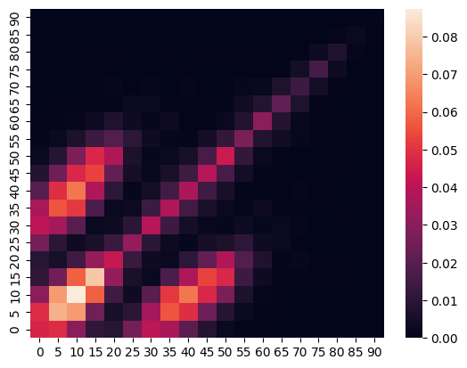

Real Data
[9]:
import pandas as pd
import popy
from popy.pop_maker import PopMaker
import popy.utils as utils
[10]:
df_pequiv = pd.read_stata("C:/01-main/03-ac135963/Projekte/popy/examples/data/pequiv.dta")
df_pequiv = df_pequiv.rename(columns={"d11101": "age"})
[11]:
df = df_pequiv
[12]:
df = df.loc[df["syear"] == 2018,]
df.loc[:, "age"] = pd.to_numeric(df["age"], errors="coerce")
df.dropna(inplace=True)
C:\Users\Marius\AppData\Local\Temp\ipykernel_8612\4210135427.py:2: SettingWithCopyWarning:
A value is trying to be set on a copy of a slice from a DataFrame.
Try using .loc[row_indexer,col_indexer] = value instead
See the caveats in the documentation: https://pandas.pydata.org/pandas-docs/stable/user_guide/indexing.html#returning-a-view-versus-a-copy
df.loc[:, "age"] = pd.to_numeric(df["age"], errors="coerce")
C:\Users\Marius\AppData\Local\Temp\ipykernel_8612\4210135427.py:2: DeprecationWarning: In a future version, `df.iloc[:, i] = newvals` will attempt to set the values inplace instead of always setting a new array. To retain the old behavior, use either `df[df.columns[i]] = newvals` or, if columns are non-unique, `df.isetitem(i, newvals)`
df.loc[:, "age"] = pd.to_numeric(df["age"], errors="coerce")
C:\Users\Marius\AppData\Local\Temp\ipykernel_8612\4210135427.py:3: SettingWithCopyWarning:
A value is trying to be set on a copy of a slice from a DataFrame
See the caveats in the documentation: https://pandas.pydata.org/pandas-docs/stable/user_guide/indexing.html#returning-a-view-versus-a-copy
df.dropna(inplace=True)
[13]:
class Agent(popy.Agent):
pass
class Home(popy.Location):
def group(self, agent):
return agent.hid
[14]:
class Model(popy.Model):
def setup(self):
self.pop_maker = PopMaker(model=self)
self.agents, self.locations = self.pop_maker.make(
df=df,
n_agents=self.p.n_agents,
sample_level="hid",
agent_class=Agent,
location_classes=[Home],
)
[15]:
parameters = {
"steps": 1,
"n_agents": 10000,
}
model = Model(parameters=parameters)
model.run()
Completed: 1 steps
Run time: 0:00:52.207053
Simulation finished
[15]:
DataDict {
'info': Dictionary with 9 keys
'parameters':
'constants': Dictionary with 2 keys
'reporters': DataFrame with 1 variable and 1 row
}
[16]:
for agent in model.agents:
agent.age_5 = utils.group_it(
value=agent.age,
start=0,
step=5,
n_steps=20,
return_value="lower_bound",
)
utils.create_contact_matrix(agents=model.agents, attr="age_5", plot=True)
[16]:
| 0 | 5 | 10 | 15 | 20 | 25 | 30 | 35 | 40 | 45 | 50 | 55 | 60 | 65 | 70 | 75 | 80 | 85 | 90 | |
|---|---|---|---|---|---|---|---|---|---|---|---|---|---|---|---|---|---|---|---|
| 90 | 0.0000 | 0.0002 | 0.0001 | 0.0002 | 0.0000 | 0.0000 | 0.0000 | 0.0001 | 0.0001 | 0.0002 | 0.0001 | 0.0000 | 0.0000 | 0.0001 | 0.0001 | 0.0001 | 0.0000 | 0.0004 | 0.0008 |
| 85 | 0.0001 | 0.0000 | 0.0002 | 0.0003 | 0.0000 | 0.0000 | 0.0000 | 0.0001 | 0.0000 | 0.0003 | 0.0002 | 0.0000 | 0.0000 | 0.0000 | 0.0000 | 0.0000 | 0.0013 | 0.0026 | 0.0004 |
| 80 | 0.0001 | 0.0001 | 0.0003 | 0.0007 | 0.0004 | 0.0003 | 0.0002 | 0.0006 | 0.0001 | 0.0006 | 0.0006 | 0.0007 | 0.0005 | 0.0003 | 0.0006 | 0.0031 | 0.0072 | 0.0013 | 0.0000 |
| 75 | 0.0001 | 0.0002 | 0.0002 | 0.0005 | 0.0003 | 0.0000 | 0.0002 | 0.0003 | 0.0004 | 0.0003 | 0.0001 | 0.0005 | 0.0004 | 0.0007 | 0.0047 | 0.0158 | 0.0031 | 0.0000 | 0.0001 |
| 70 | 0.0000 | 0.0000 | 0.0000 | 0.0007 | 0.0016 | 0.0005 | 0.0013 | 0.0003 | 0.0012 | 0.0003 | 0.0003 | 0.0016 | 0.0020 | 0.0070 | 0.0140 | 0.0047 | 0.0006 | 0.0000 | 0.0001 |
| 65 | 0.0002 | 0.0005 | 0.0008 | 0.0009 | 0.0007 | 0.0024 | 0.0021 | 0.0009 | 0.0005 | 0.0004 | 0.0007 | 0.0039 | 0.0085 | 0.0218 | 0.0070 | 0.0007 | 0.0003 | 0.0000 | 0.0001 |
| 60 | 0.0006 | 0.0008 | 0.0013 | 0.0033 | 0.0074 | 0.0033 | 0.0017 | 0.0030 | 0.0006 | 0.0010 | 0.0023 | 0.0081 | 0.0308 | 0.0085 | 0.0020 | 0.0004 | 0.0005 | 0.0000 | 0.0000 |
| 55 | 0.0009 | 0.0026 | 0.0065 | 0.0140 | 0.0189 | 0.0105 | 0.0031 | 0.0012 | 0.0010 | 0.0041 | 0.0117 | 0.0276 | 0.0081 | 0.0039 | 0.0016 | 0.0005 | 0.0007 | 0.0000 | 0.0000 |
| 50 | 0.0025 | 0.0086 | 0.0276 | 0.0473 | 0.0381 | 0.0066 | 0.0016 | 0.0023 | 0.0055 | 0.0166 | 0.0434 | 0.0117 | 0.0023 | 0.0007 | 0.0003 | 0.0001 | 0.0006 | 0.0002 | 0.0001 |
| 45 | 0.0084 | 0.0248 | 0.0473 | 0.0530 | 0.0224 | 0.0051 | 0.0018 | 0.0061 | 0.0145 | 0.0392 | 0.0166 | 0.0041 | 0.0010 | 0.0004 | 0.0003 | 0.0003 | 0.0006 | 0.0003 | 0.0002 |
| 40 | 0.0203 | 0.0491 | 0.0623 | 0.0378 | 0.0104 | 0.0016 | 0.0047 | 0.0153 | 0.0368 | 0.0145 | 0.0055 | 0.0010 | 0.0006 | 0.0005 | 0.0012 | 0.0004 | 0.0001 | 0.0000 | 0.0001 |
| 35 | 0.0367 | 0.0562 | 0.0509 | 0.0173 | 0.0027 | 0.0029 | 0.0143 | 0.0378 | 0.0153 | 0.0061 | 0.0023 | 0.0012 | 0.0030 | 0.0009 | 0.0003 | 0.0003 | 0.0006 | 0.0001 | 0.0001 |
| 30 | 0.0403 | 0.0358 | 0.0200 | 0.0027 | 0.0031 | 0.0098 | 0.0394 | 0.0143 | 0.0047 | 0.0018 | 0.0016 | 0.0031 | 0.0017 | 0.0021 | 0.0013 | 0.0002 | 0.0002 | 0.0000 | 0.0000 |
| 25 | 0.0262 | 0.0101 | 0.0035 | 0.0061 | 0.0130 | 0.0322 | 0.0098 | 0.0029 | 0.0016 | 0.0051 | 0.0066 | 0.0105 | 0.0033 | 0.0024 | 0.0005 | 0.0000 | 0.0003 | 0.0000 | 0.0000 |
| 20 | 0.0090 | 0.0055 | 0.0146 | 0.0325 | 0.0430 | 0.0130 | 0.0031 | 0.0027 | 0.0104 | 0.0224 | 0.0381 | 0.0189 | 0.0074 | 0.0007 | 0.0016 | 0.0003 | 0.0004 | 0.0000 | 0.0000 |
| 15 | 0.0112 | 0.0253 | 0.0583 | 0.0790 | 0.0325 | 0.0061 | 0.0027 | 0.0173 | 0.0378 | 0.0530 | 0.0473 | 0.0140 | 0.0033 | 0.0009 | 0.0007 | 0.0005 | 0.0007 | 0.0003 | 0.0002 |
| 10 | 0.0307 | 0.0695 | 0.0874 | 0.0583 | 0.0146 | 0.0035 | 0.0200 | 0.0509 | 0.0623 | 0.0473 | 0.0276 | 0.0065 | 0.0013 | 0.0008 | 0.0000 | 0.0002 | 0.0003 | 0.0002 | 0.0001 |
| 5 | 0.0486 | 0.0742 | 0.0695 | 0.0253 | 0.0055 | 0.0101 | 0.0358 | 0.0562 | 0.0491 | 0.0248 | 0.0086 | 0.0026 | 0.0008 | 0.0005 | 0.0000 | 0.0002 | 0.0001 | 0.0000 | 0.0002 |
| 0 | 0.0466 | 0.0486 | 0.0307 | 0.0112 | 0.0090 | 0.0262 | 0.0403 | 0.0367 | 0.0203 | 0.0084 | 0.0025 | 0.0009 | 0.0006 | 0.0002 | 0.0000 | 0.0001 | 0.0001 | 0.0001 | 0.0000 |
